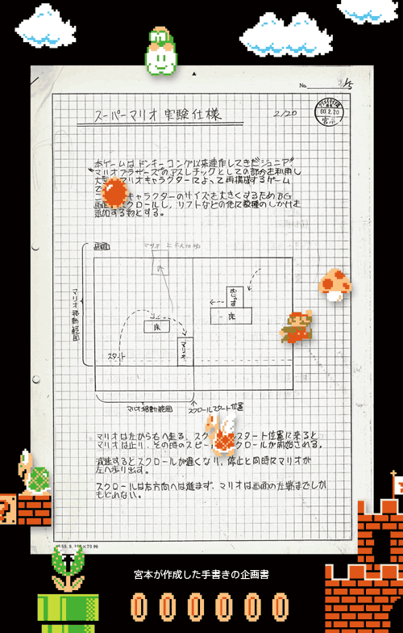
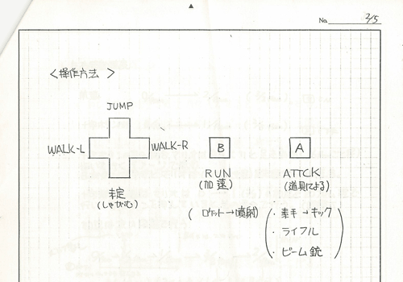

### 「スーパーマリオ２５周年」

<DIV ID="volbox-5"><P CLASS="volnum1"><A CLASS="btn-volnum1" TITLE="社長の代わりに糸井重里さんが訊く" HREF="../vol1/index.html">社長の代わりに糸井重里さんが訊く
<P CLASS="volnum2"><A CLASS="btn-volnum2" TITLE="ファミコンとマリオ 篇" HREF="../vol2/index.html">ファミコンとマリオ 篇
<P CLASS="volnum3"><A CLASS="btn-volnum3" TITLE="『スーパーマリオ』シリーズ開発経験者 篇 その１" HREF="../vol3/index.html">『スーパーマリオ』シリーズ開発経験者 篇 その１
<P CLASS="volnum4"><A CLASS="btn-volnum4" TITLE="『スーパーマリオ』シリーズ開発経験者 篇 その２" HREF="../vol4/index.html">『スーパーマリオ』シリーズ開発経験者 篇 その２
<P CLASS="volnum5"><A CLASS="btn-volnum5s" TITLE="『スーパーマリオ』生みの親たち 篇" HREF="../vol5/index.html">『スーパーマリオ』生みの親たち 篇

<DIV ID="main-visual">
<H2>
<DIV ID="pagebox-wrap">
<DIV CLASS="pagebox">
<P CLASS="pagenums"><A>1. 十字ボタンを押してジャンプ
<P CLASS="pagenum"><A HREF="index2.html">2. 入社１年目の新人も
<P CLASS="pagenum"><A HREF="index3.html">3. “集大成”のソフトに
<P CLASS="pagenum"><A HREF="index4.html">4. ２人でいっしょにコースデザイン
<P CLASS="pagenum"><A HREF="index5.html">5. “メモリ減らし”のために
<P CLASS="pagenum"><A HREF="index6.html">6. “スーパーマリオ保存会”
<P CLASS="pagenum"><A HREF="index7.html">7. 京都文化のように

<DIV>

<DIV ID="int-box-wrap">
<H3>
<DIV CLASS="int-box"><DIV CLASS="int-name"><P>岩田
<DIV CLASS="int-text"><P>『スーパーマリオ』<sup>（※1）</sup>２５周年インタビューの最終回は、<br>開発のオリジナルメンバーで、いまも『スーパーマリオ』シリーズの<br>開発にかかわっている４人のみなさんに集まっていただきました。<br>&nbsp;<br>『スーパーマリオブラザーズ』がどのようにして生まれ、<br>誕生から２５年経ったいまも、<br>どうして多くの人から支持していただけるのか、<br>そんな話をお訊きできればと思います。<br>今日はよろしくお願いいたします。
<DIV CLASS="clear"><DIV CLASS="int-box"><DIV CLASS="int-name"><P>一同
<DIV CLASS="int-text"><P>よろしくお願いいたします。
<DIV CLASS="notes-box"><DIV CLASS="notes-num"><P>※1
<DIV CLASS="notes-text"><P>『スーパーマリオブラザーズ』＝１９８５年９月に、ファミコンで発売された横スクロールアクションゲーム。

<DIV CLASS="clear">
<DIV CLASS="clear">

<DIV CLASS="clear">
<DIV CLASS="clear"><DIV CLASS="int-box"><DIV CLASS="int-name"><P>岩田
<DIV CLASS="int-text"><P>ところで・・・目の前に並べられたこの資料は、<br>どなたの机の引き出しのなかに眠っていたものなんですか？
<DIV CLASS="clear"><DIV CLASS="img-photo">
<DIV CLASS="int-box"><DIV CLASS="int-name"><P>中郷
<DIV CLASS="int-text"><P>わたしのです。
<DIV CLASS="clear"><DIV CLASS="int-box"><DIV CLASS="int-name"><P>岩田
<DIV CLASS="int-text"><P>中郷さん、<A HREF="../../../../ds/interview/bkij/vol2/index5.html"><SPAN>前回に引き続き、</SPAN><br>また秘蔵の資料を発掘してくれたんですね（笑）。
<DIV CLASS="clear"><DIV CLASS="int-box"><DIV CLASS="int-name"><P>中郷
<DIV CLASS="int-text"><P>はい（笑）。
<DIV CLASS="clear"><DIV CLASS="int-box"><DIV CLASS="int-name"><P>宮本
<DIV CLASS="int-text"><P>物持ちいいなあ。
<DIV CLASS="clear"><DIV CLASS="int-box"><DIV CLASS="int-name"><P>中郷
<DIV CLASS="int-text"><P>これが宮本さんの・・・。
<DIV CLASS="clear"><DIV CLASS="int-box"><DIV CLASS="int-name"><P>岩田
<DIV CLASS="int-text"><P>わ、すごい（笑）、これはすごい・・・。
<DIV CLASS="clear"><DIV CLASS="int-box"><DIV CLASS="int-name"><P>中郷
<DIV CLASS="int-text"><P>宮本さんが最初に書いた『スーパーマリオ』の仕様書です。<br>
<DIV CLASS="clear"><DIV CLASS="int-box"><DIV CLASS="int-name"><P>岩田
<DIV CLASS="int-text"><P>ああ、これは<SCRIPT LANGUAGE="JavaScript" TYPE="text/javascript">
<!--
	document.write('<A HREF="player.html?width=400&amp;height=380&amp;id=001" CLASS="thickbox 001" TITLE="『スーパーマリオコレクション スペシャルパック』"><SPAN>『スーパーマリオコレクション』<'+'/SPAN><'+'/A>');
//-->
</SCRIPT><NOSCRIPT><A HREF="img/slide001.jpg"><SPAN>『スーパーマリオコレクション』</SPAN></NOSCRIPT><sup>（※2）</sup>の<br>ブックレットに載っていたものですね。
<DIV CLASS="clear"><DIV CLASS="img-photo-500px">
<DIV CLASS="int-box"><DIV CLASS="int-name"><P>&nbsp;
<DIV CLASS="int-text">
<DIV CLASS="notes-box"><DIV CLASS="notes-num"><P>※2
<DIV CLASS="notes-text"><P>『スーパーマリオコレクション』＝『スーパーマリオコレクション スペシャルパック』。スーパーファミコン用の同名ソフトをWiiで復刻。「スーパーマリオ２５周年」を記念して、２０１０年１０月に発売されたスペシャルパッケージ。マリオ２５年間の歴史や開発資料などを掲載した「ブックレット」と、マリオの音楽が収録された「サウンドトラックＣＤ」付き。

<DIV CLASS="clear">
<DIV CLASS="clear">

<DIV CLASS="clear">
<DIV CLASS="clear"><DIV CLASS="int-box"><DIV CLASS="int-name"><P>中郷
<DIV CLASS="int-text"><P>はい。当時はまだ手書きで、<br>押されたハンコを見ると、クリエイティブ課なんです。
<DIV CLASS="clear"><DIV CLASS="int-box"><DIV CLASS="int-name"><P>岩田
<DIV CLASS="int-text"><P>情報開発課ができる前の課のハンコで、<br>日付は・・・昭和６０年（１９８５年）２月２０日。<br>ということは、初代『スーパーマリオ』の発売の年に書かれたものですね。
<DIV CLASS="clear"><DIV CLASS="int-box"><DIV CLASS="int-name"><P>宮本
<DIV CLASS="int-text"><P>ですから、２月２０日に仕様書を書いて、<br>その半年後にはロム出しをするという・・・。
<DIV CLASS="clear"><DIV CLASS="img-photo">
<DIV CLASS="int-box"><DIV CLASS="int-name"><P>岩田
<DIV CLASS="int-text"><P>なんて仕事が早い（笑）。
<DIV CLASS="clear"><DIV CLASS="int-box"><DIV CLASS="int-name"><P>宮本
<DIV CLASS="int-text"><P>（笑）。実はこれの前にも、<br>１９８４年の１２月に書いたテスト仕様書があるはずなんですけど。
<DIV CLASS="clear"><DIV CLASS="int-box"><DIV CLASS="int-name"><P>中郷
<DIV CLASS="int-text"><P>それが見つからないんです。<br>どこを探しても見つからないんです。
<DIV CLASS="clear"><DIV CLASS="int-box"><DIV CLASS="int-name"><P>宮本
<DIV CLASS="int-text"><P>確か・・・最初に中郷さんに言ったのは、<br>「大きいのがぴょんぴょんはねるのをつくってみてよ」と・・・。
<DIV CLASS="clear"><DIV CLASS="int-box"><DIV CLASS="int-name"><P>岩田
<DIV CLASS="int-text"><P>それで、大きいマリオが登場することになったんですね。
<DIV CLASS="clear"><DIV CLASS="int-box"><DIV CLASS="int-name"><P>宮本
<DIV CLASS="int-text"><P>そこで、１９８４年の１２月頃に<br>『マリオブラザーズ』<sup>（※3）</sup>の倍くらいの大きさのマリオが<br>ぴょんぴょん跳んだら、どんな手ごたえになるのか、<br>中郷さんの会社であるＳＲＤ<sup>（※4）</sup>のプログラマーさんに頼んで<br>テスト版をつくってもらったんです。<br>ボタンを押したら、ぴょんぴょんはねて、<br>連打したら、空中もぴょんぴょんとはねるようなものを。<br>そしたら、「いい感じよね」ということになって。
<DIV CLASS="notes-box"><DIV CLASS="notes-num"><P>※3
<DIV CLASS="notes-text"><P>『マリオブラザーズ』＝１９８３年にアーケード版が登場し、同年９月にファミコン版が発売されたアクションゲーム。
<DIV CLASS="clear">
<DIV CLASS="clear">
<DIV CLASS="notes-box"><DIV CLASS="notes-num"><P>※4
<DIV CLASS="notes-text"><P>ＳＲＤ＝株式会社エス.アール.ディー。１９７９年に設立された、ゲームソフトのプログラムの受託開発や、ＣＡＤパッケージの開発・販売などを行う会社。本社は大阪にあり、京都事業所は任天堂本社内にある。代表取締役社長は中郷俊彦氏。

<DIV CLASS="clear">
<DIV CLASS="clear">

<DIV CLASS="clear">
<DIV CLASS="clear"><DIV CLASS="int-box"><DIV CLASS="int-name"><P>岩田
<DIV CLASS="int-text"><P>そのテスト版ではすでに空は青かったんですか？
<DIV CLASS="clear"><DIV CLASS="int-box"><DIV CLASS="int-name"><P>中郷
<DIV CLASS="int-text"><P>いや、まだです。
<DIV CLASS="clear"><DIV CLASS="int-box"><DIV CLASS="int-name"><P>宮本
<DIV CLASS="int-text"><P>え？青かったんじゃなかった？
<DIV CLASS="clear"><DIV CLASS="int-box"><DIV CLASS="int-name"><P>中郷
<DIV CLASS="int-text"><P>いや、まだ真っ黒でした。
<DIV CLASS="clear"><DIV CLASS="int-box"><DIV CLASS="int-name"><P>岩田
<DIV CLASS="int-text"><P>「<A HREF="../../../../wii/interview/smnj/vol2/index4.html"><SPAN>社長が訊く『NewスーパーマリオWii』</SPAN>」のとき、<br>中郷さんは、画面に映った青空を見て<br>「ファミコンでもこんな鮮やかな画面が出せるんや」と<br>驚いたことを語っていましたよね。
<DIV CLASS="clear"><DIV CLASS="int-box"><DIV CLASS="int-name"><P>中郷
<DIV CLASS="int-text"><P>それは背景がスクロールするようになってからのことなんです。
<DIV CLASS="clear"><DIV CLASS="int-box"><DIV CLASS="int-name"><P>岩田
<DIV CLASS="int-text"><P>最初はマリオだけを動かすような感じだったんですか？
<DIV CLASS="clear"><DIV CLASS="int-box"><DIV CLASS="int-name"><P>手塚
<DIV CLASS="int-text"><P>いえ、四角いものだけが動いていたんです。
<DIV CLASS="clear"><DIV CLASS="img-photo">
<DIV CLASS="int-box"><DIV CLASS="int-name"><P>岩田
<DIV CLASS="int-text"><P>最初は四角いものを動かす実験からはじまったと。
<DIV CLASS="clear"><DIV CLASS="int-box"><DIV CLASS="int-name"><P>宮本
<DIV CLASS="int-text"><P>はい。四角いものをとりあえず動かしてみて、<br>「次はこういうのをつくろうか」とか言いながら、<br>なにか別のことをしていたんです。
<DIV CLASS="clear"><DIV CLASS="int-box"><DIV CLASS="int-name"><P>中郷
<DIV CLASS="int-text"><P>なにをやってたんでしょうね、あの実験のあと。
<DIV CLASS="clear"><DIV CLASS="int-box"><DIV CLASS="int-name"><P>宮本
<DIV CLASS="int-text"><P>確か<SCRIPT LANGUAGE="JavaScript" TYPE="text/javascript">
<!--
	document.write('<A HREF="player.html?width=300&amp;height=320&amp;id=002" CLASS="thickbox 002" TITLE="『ゼルダの伝説』"><SPAN>『ゼルダ』<'+'/SPAN><'+'/A>');
//-->
</SCRIPT><NOSCRIPT><A HREF="img/slide002.jpg"><SPAN>『ゼルダ』</SPAN></NOSCRIPT><sup>（※5）</sup>の元をつくったり・・・。
<DIV CLASS="clear"><DIV CLASS="int-box"><DIV CLASS="int-name"><P>中郷
<DIV CLASS="int-text"><P>ああ、そうでしたね。
<DIV CLASS="notes-box"><DIV CLASS="notes-num"><P>※5
<DIV CLASS="notes-text"><P>『ゼルダ』＝『ゼルダの伝説』。１９８６年２月に、ファミコンのディスクシステム用ソフトとして同時発売された、アクションアドベンチャーゲーム。

<DIV CLASS="clear">
<DIV CLASS="clear">

<DIV CLASS="clear">
<DIV CLASS="clear"><DIV CLASS="int-box"><DIV CLASS="int-name"><P>宮本
<DIV CLASS="int-text"><P>そうそう、思い出してきました。<br>四角いもので『マリオ』の実験をしたあと、<br>『ゼルダ』の元になる実験をはじめたんです。<br>これ（仕様書）を書いたのは翌年の２月でしょう？
<DIV CLASS="clear"><DIV CLASS="int-box"><DIV CLASS="int-name"><P>岩田
<DIV CLASS="int-text"><P>ええ、２月です。
<DIV CLASS="clear"><DIV CLASS="int-box"><DIV CLASS="int-name"><P>宮本
<DIV CLASS="int-text"><P>なので、「いいかげん、そろそろ決めてください」と<br>中郷さんからせっつかれるように書いた仕様書がこれなんです。<br>１２月につくったテスト版の動きを見ながら、<br>一発書きしたものなんです。
<DIV CLASS="clear"><DIV CLASS="int-box"><DIV CLASS="int-name"><P>中郷
<DIV CLASS="int-text"><P>だから、マリオも四角ですし、<br>コントローラのボタンの形も四角なんですよ。
<DIV CLASS="clear"><DIV CLASS="img-photo">
<DIV CLASS="int-box"><DIV CLASS="int-name"><P>岩田
<DIV CLASS="int-text"><P>まだ丸ボタンになっていなかったんですね。<br>操作方法は・・・・・・あれ？<br>ジャンプは「十字ボタンの上」になってますよ、宮本さん。
<DIV CLASS="clear"><DIV CLASS="img-photo-500px">
<DIV CLASS="int-box"><DIV CLASS="int-name"><P>宮本
<DIV CLASS="int-text"><P>ああ・・・。
<DIV CLASS="clear"><DIV CLASS="int-box"><DIV CLASS="int-name"><P>中郷
<DIV CLASS="int-text"><P>ホントだ。
<DIV CLASS="clear"><DIV CLASS="int-box"><DIV CLASS="int-name"><P>岩田
<DIV CLASS="int-text"><P>Ａボタンは道具による「アタック」・・・。<br>これ、『ゼルダ』ですかね。ひょっとして。
<DIV CLASS="clear"><DIV CLASS="int-box"><DIV CLASS="int-name"><P>中郷
<DIV CLASS="int-text"><P>え？
<DIV CLASS="clear"><DIV CLASS="int-box"><DIV CLASS="int-name"><P>宮本
<DIV CLASS="int-text"><P>おかしいな。<br>「十字ボタンの左右でマリオが２段階のスピードに・・・」。
<DIV CLASS="clear"><DIV CLASS="int-box"><DIV CLASS="int-name"><P>中郷
<DIV CLASS="int-text"><P>やっぱりマリオですよ。
<DIV CLASS="clear"><DIV CLASS="int-box"><DIV CLASS="int-name"><P>手塚
<DIV CLASS="int-text"><P>ふふふ（笑）。
<DIV CLASS="clear"><DIV CLASS="int-box"><DIV CLASS="int-name"><P>岩田
<DIV CLASS="int-text"><P>しかも「Ａボタンは素手の場合はキックで、ライフル、ビーム銃」<br>とか書いてありますよ。本当に『マリオ』なんですか、これ（笑）。
<DIV CLASS="clear"><DIV CLASS="int-box"><DIV CLASS="int-name"><P>一同
<DIV CLASS="int-text"><P>（笑）
<DIV CLASS="clear"><DIV CLASS="int-box"><DIV CLASS="int-name"><P>宮本
<DIV CLASS="int-text"><P>きんと雲で飛んだとき、ビーム銃とかを使うつもりだったんです。
<DIV CLASS="clear"><DIV CLASS="int-box"><DIV CLASS="int-name"><P>岩田
<DIV CLASS="int-text"><P>空を飛ぶことは最初からイメージしていたんですか？
<DIV CLASS="clear"><DIV CLASS="int-box"><DIV CLASS="int-name"><P>宮本
<DIV CLASS="int-text"><P>はい。しかもその時点では、きんと雲じゃなくて、<br>ロケットで空を飛ぶ予定だったんです。
<DIV CLASS="clear"><DIV CLASS="int-box"><DIV CLASS="int-name"><P>岩田
<DIV CLASS="int-text"><P>え？マリオがロケットで飛ぶんですか？（笑）<br>あ、確かに別のページにはそう書いてありますね。
<DIV CLASS="clear"><DIV CLASS="int-box"><DIV CLASS="int-name"><P>宮本
<DIV CLASS="int-text"><P>そこで地上と空とで、アクションを分けることにして、<br>あのときはたぶん、まだ迷っていたんでしょうね。<br>完成する６カ月前なのに（笑）。
<DIV CLASS="clear"><DIV CLASS="int-box"><DIV CLASS="int-name"><P>岩田
<DIV CLASS="int-text"><P>それにしても、最初の頃は<br>Ａボタンでジャンプではなかったというのは驚きですね。
<DIV CLASS="clear"><DIV CLASS="int-box"><DIV CLASS="int-name"><P>宮本
<DIV CLASS="int-text"><P>僕も知らんかった！
<DIV CLASS="clear"><DIV CLASS="int-box"><DIV CLASS="int-name"><P>一同
<DIV CLASS="int-text"><P>（笑）
<DIV CLASS="clear"><DIV ID="asks-pagination">
<DIV ID="page-next"><A HREF="index2.html">2. 入社１年目の新人も
<DIV CLASS="clear">
<DIV CLASS="clear">
<DIV ID="ftr">
<P CLASS="home"><A HREF="../../../../index.html">任天堂ホームページ
<P CLASS="pagetop"><A HREF="#pagetop">ページの一番上へ
<DIV CLASS="clear">

<DIV CLASS="clear">
</BODY>
</HTML>
